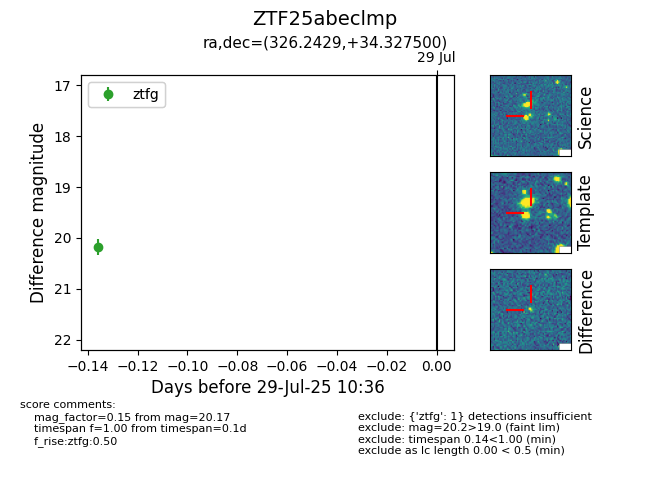

Target ZTF25abeclmp at 2025-07-29 10:36, see:
FINK: fink-portal.org/ZTF25abeclmp
Lasair: lasair-ztf.lsst.ac.uk/objects/ZTF25abeclmp
ALeRCE: alerce.online/object/ZTF25abeclmp
alt names
ZTF25abeclmp (ztf,fink)
coordinates:
equatorial (ra, dec) = (326.2429,+34.32750)
galactic (l, b) = (84.6527,-14.34142)
photometry
last ztfg=20.17
1 ztfg detections
